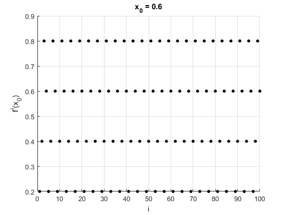

%implement f(x): fn is the copy of f that is used to compute f^i(x) syms x f fn a = 2*x; b = 2*x-1; f = piecewise((0<=x)&(x<=0.5), a, (0.5<x)&(x<=1), b); %plot of f(x) fplot(f,[0,1]); %declare x_0 and init arrays to store the computed values x_0 = 0.6; fVals = zeros(1,100); iVals = zeros(1,100); %compute f^i(x_0) fn = f; for i = 1:100 % find f^i(x_0) val = subs(fn,x,x_0); val = round(val,12); %store found value fVals(i) = val; iVals(i) = i; %display f(x_0), f^2(x_0), f^3(x_0) and f^100(x_0) if (i == 1 || i == 2 || i == 3 || i == 100) disp([i val]); end %compute f^i+1(x) = f(f^i(x)) fn = subs(f,x,val); end %plot sequence scatter(iVals,fVals, 20, 'black','filled'); hold on grid on xlabel('i'); ylabel('f^i(x_0)') title('x_0 = 0.6');%change to reflect x_0
[1, 0.2] [2, 0.4] [3, 0.8] [100, 0.6]